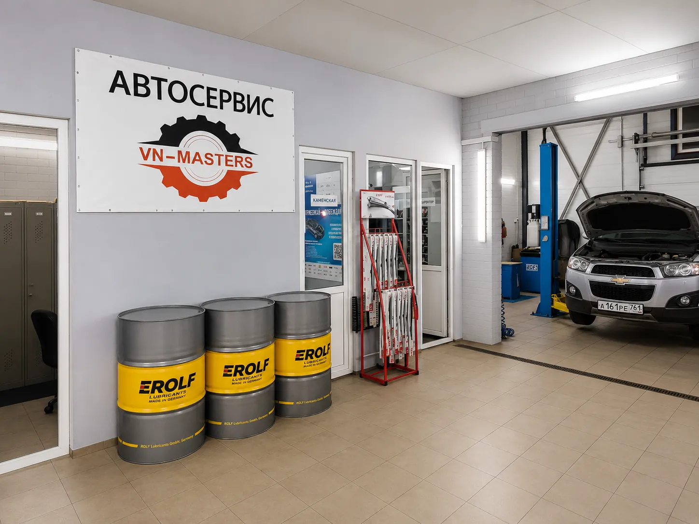
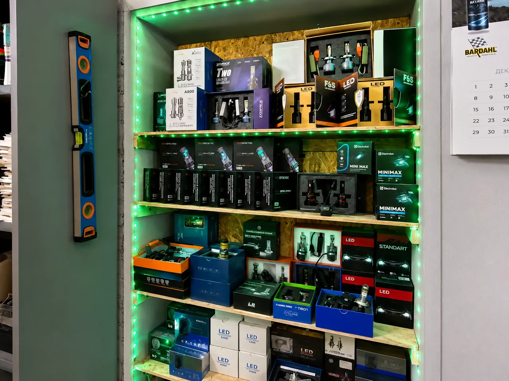
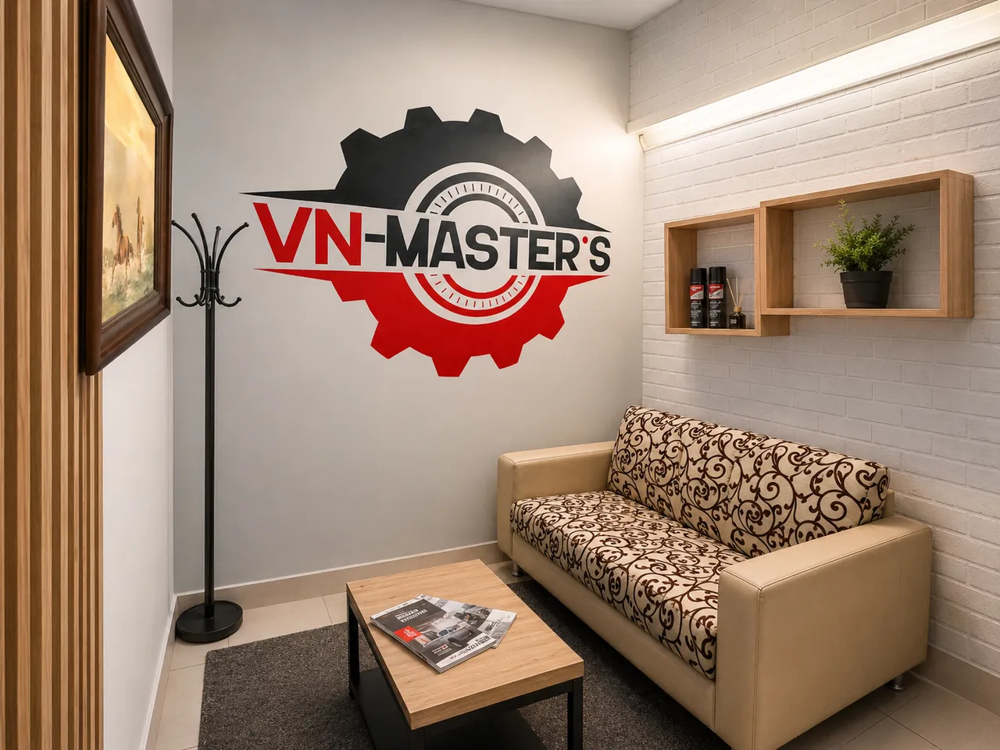
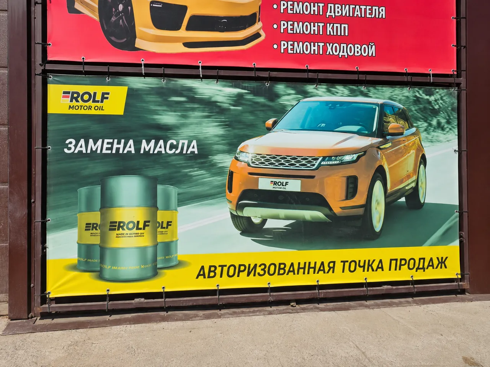
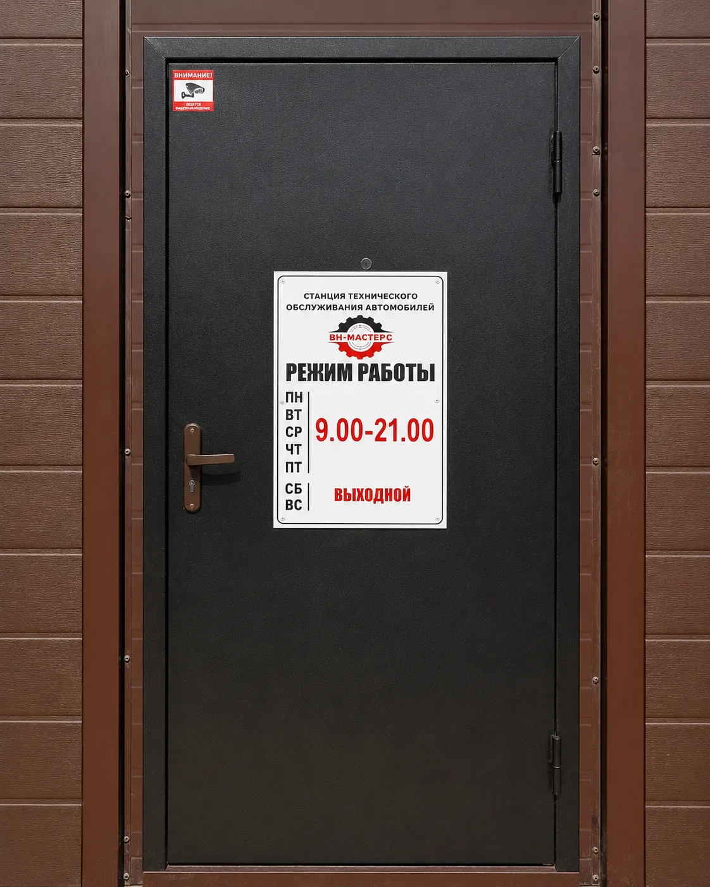

Начать с симптома
Человеку не нужно самостоятельно угадывать неисправную деталь.
Локальный технический сервис в Ростове-на-Дону. Вместо неподтверждённых цифр о клиентах и опыте — реальный адрес, фотографии и понятный порядок взаимодействия.

Подход
Первый шаг — разобраться, при каких условиях проявляется симптом и какая система требует проверки. Диагностика должна привести к понятному выводу, а не к списку предположений.
После этого можно обсуждать состав работ, варианты запчастей и стоимость. Если в процессе появляется новая задача, она не должна автоматически становиться частью заказа без согласования.
Как фиксируются договорённостиПринципы сервиса
Хороший процесс виден в действиях: какие вопросы задают, как объясняют причину, когда называют стоимость и что происходит при дополнительных работах.
Человеку не нужно самостоятельно угадывать неисправную деталь.
Результат диагностики должен быть понятен без специального словаря.
Работы и запчасти обсуждаются до начала соответствующей операции.
То, что нужно сейчас, не смешивается с будущим обслуживанием.
Контроль результата связан с тем, с чем автомобиль приехал.
После выдачи клиент понимает, что сделано и за чем наблюдать.
Реальные кадры
Фотографии показывают рабочее пространство VN-MASTERS и не заменены интерьером другого автосервиса.






Фактическая информация
VN-MASTERS находится в Ростове-на-Дону по адресу ул. Стартовая, 1/1. На табличке у входа указан режим: понедельник–пятница с 9:00 до 21:00, суббота и воскресенье — выходные.
Перед выездом можно позвонить и подтвердить свободное время. Онлайн-форма отправляет обращение, но не создаёт автоматическую запись в календаре.
Оставьте описание симптома и контактный номер. Сервис свяжется с вами для уточнения.